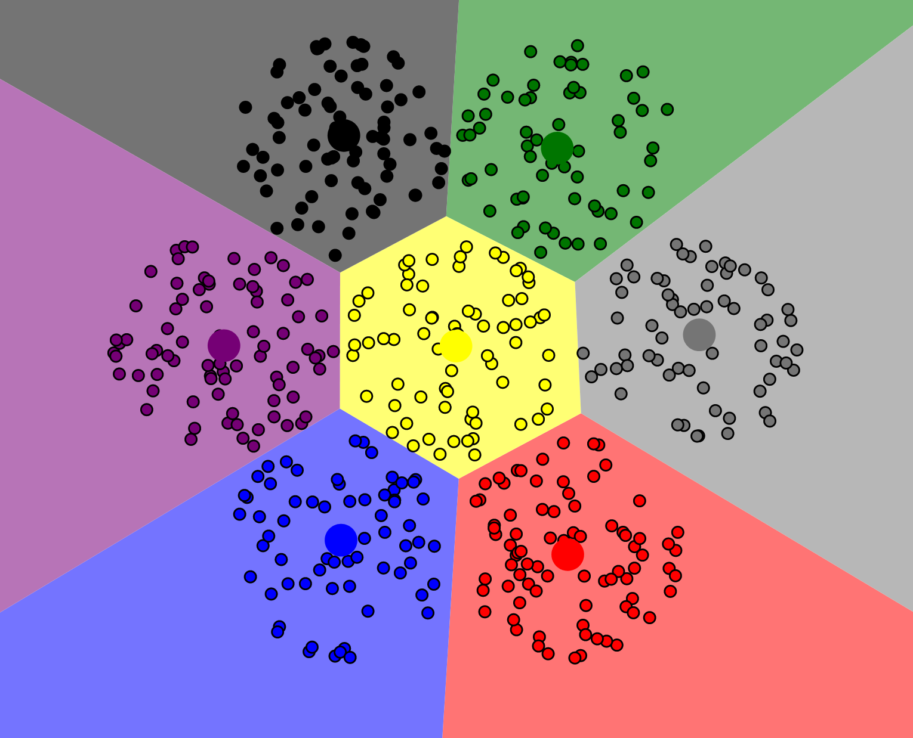
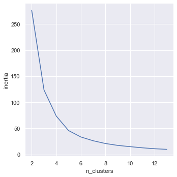

CIS 241, Dr. Ladd
🪁🪁🪁
Predicting a known target from a set of predictor variables.
e.g. Logistic Regression, Naive Bayes, KNN, Random Forest, etc.
It constructs a model of the data without learning from existing labels.

It can’t find clusters that aren’t there!
Just like in KNN, you have to choose K based on the data! (More on this later.)
For a dataset of all quantitative variables, use
StandardScaler() as usual.
It is best to stick with numerical variables for clustering, but if
you must use categorical variables, remember to use one-hot encoding
before scaling. A MinMaxScaler() may also be useful in this
case.
Because this is an unsupervised method, there’s no need to reserve a test set. There would be nothing to test on!
This isn’t the whole workflow, it’s just the model code.
n_clusters: the number of clusters the
model will produce. This is “K”!n_init: the total number of times the
model will be run.max_iter: the number of iterations the
model will take to find centroids.random_state: keeps the model the same
every time.First, we can look at the relative size of the clusters. Are they relatively balanced? Unbalanced clusters may mean we need to try again.
Next, we can look at the cluster means for each cluster. This tells us where the centroid is and gives us a sense of how the different variables interact.
# Using the .cluster_centers_ attribute of our model
# Get the centers into a dataframe:
centers = pd.DataFrame(kmeans.cluster_centers_, columns=predictors)
# Tidy our dataset with .melt() (the opposite of pivot):
centers = centers.melt(ignore_index=False).reset_index()
# Create bar plots to compare the centers
sns.catplot(x='variable',y='value',col='index',kind='bar',data=centers)penguins dataset.n_clusters)!Good luck! 🐧🐧🐧
You can review the documentation and use every exploratory tool in the book to get a sense of how many clusters there might be in the data.
Maybe your company needs to split customers into exactly 4 categories, for instance.
# Steps 1 & 2: Run K-means with different K and get inertia
inertia = []
for n_clusters in range(2,14):
kmeans = KMeans(n_clusters=n_clusters, random_state=0).fit(X_std)
inertia.append(kmeans.inertia_ / n_clusters)
# Step 3: Put into a dataframe and create a line plot
inertia = pd.DataFrame({'n_clusters': range(2,14), 'inertia': inertia})
sns.relplot(x='n_clusters',y='inertia',kind='line',data=inertia)
See how the “elbow” bends around 3 or 4 clusters? 💪